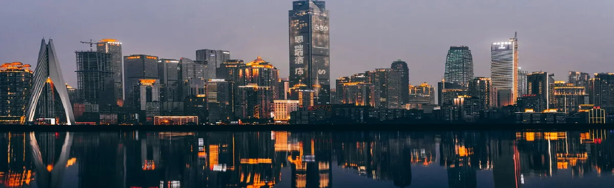

|
全国科普示范区 |
|  |
渝中区位于长江上游地区、重庆大都市区，属重庆主城九区之一。地处在长江 嘉陵江交汇地带，由于两江环抱，形似半岛，名渝中半岛。渝中区作为重庆 政治、经济、文化以及商贸流通中心，别称“山城”、“江城”，巴渝文化 以及红岩精神在此发源。
道。根据第七次人口普查数据，截至2020年11月1日零时，渝中区常住人口 588717人。
“国家慢性病综合防控示范区”、“全国科普示范区”等荣誉称号。2020年 6月，经中央依法治国委入选为第一批全国法治政府建设示范地区和项目名单 10月20日，入选全国双拥模范城（县）名单。
淀了巴渝文化、抗战文化、红岩精神等厚重的人文底蕴，孕育了重庆 的“根”和“源”，浓缩了山城、江城、不夜城的精华，展现着“老重庆底片、新 重庆客厅”的魅力神韵，在老重庆人心中“到渝中就是进城”。 |
|
||||||||
 |